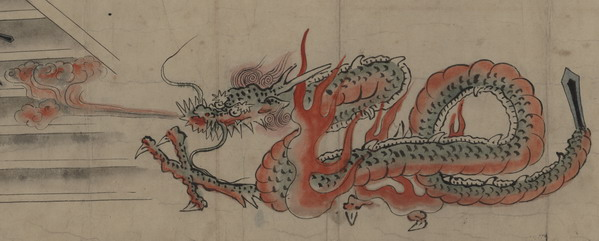

大蛇と化した清姫。鱗は緑色で、蛇腹は赤く、額に長い角を生やしている。尾は剣のようである。口から炎を吹きだし、体の周りにも炎がたなびいている。全身をくねらせて、安珍を追っている。
出典：親書誌：U426_nichibunken_0152：道成寺縁起；ドウジョウジエンギ／日付：2010／資源識別子：U426_nichibunken_0152_0009_0000
Copyright (c)2010- International Research Center for Japanese Studies, Kyoto, Japan. All rights reserved.